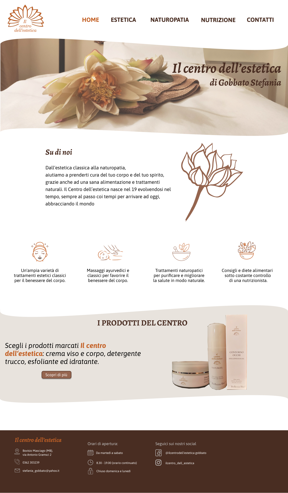
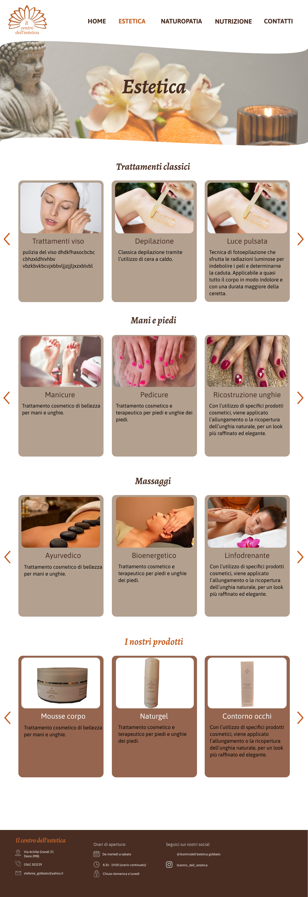
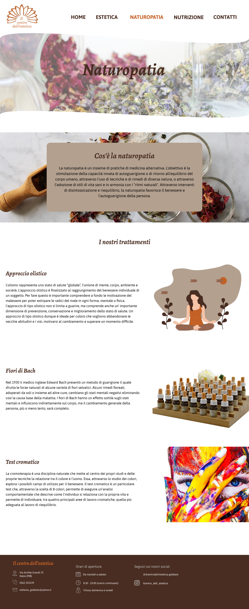
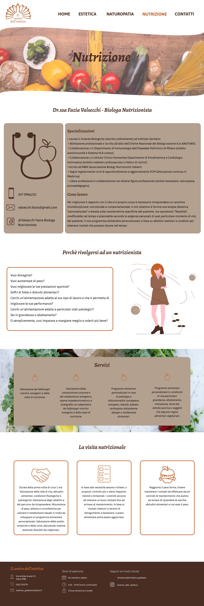
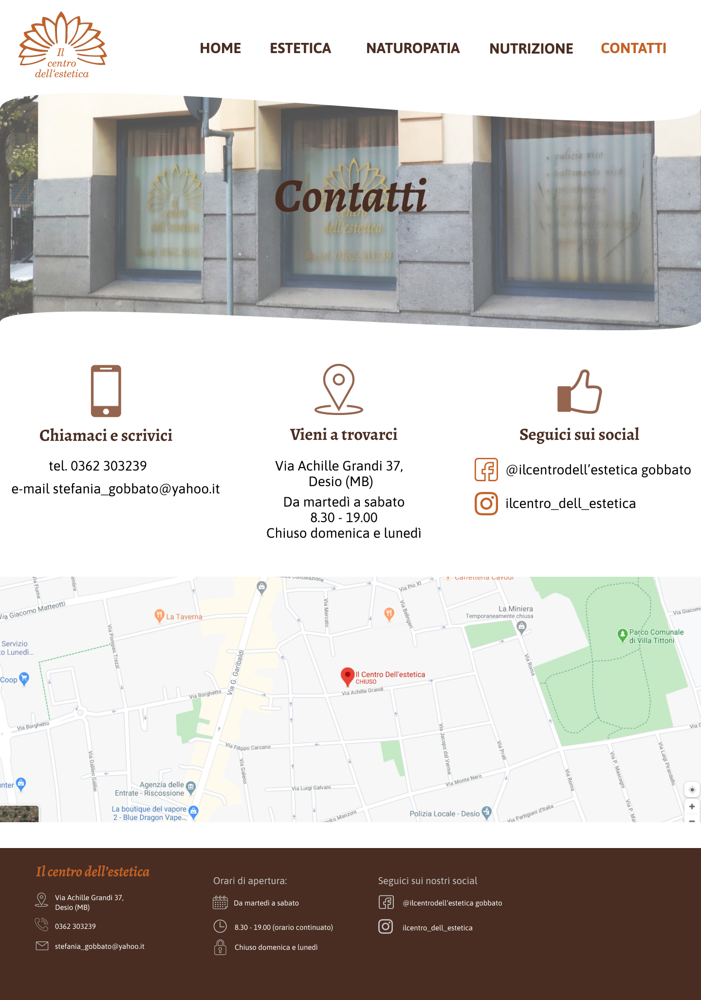

Product
Il Centro dell'Estetica is a beauty center near Milano. For this business, I've designed a web site, from wireframing to code development. The project is ongoing.
Logo and Palette
Typography
Mukta
h1, h2, h3
Il Centro dell'Estetica
Il nostro negozio
Muli
paragraph
La naturopatia è un insieme di pratiche di medicina alternativa. L'obiettivo è la stimolazione della capacità innata di autoguarigione o di ritorno all'equilibrio del corpo umano, attraverso l'uso di tecniche e di rimedi di diversa natura, o attraverso l'adozione di stili di vita sani e in armonia con i "ritmi naturali".
Wireframe




